MSU Graduate Spatial Ecology Lab 5
Phoebe Zarnetske; plz@msu.edu
Sep 2015; rev. Oct 2, 2019, Sep 30, 2020, Oct 4, 2022
Lab 5: Variograms, Ripley’s K
This lab has 4 Questions associated with Variograms. You need to hand
in a PDF produced from R Markdown, including output plots, any
statistics, code, and text for answers to the questions below. When
referring to the code below it may be more useful to use the .Rmd file
linked above. A Ripley’s K exercise using the R package,
spatstat, is also included but is optional.
OPTIONAL: If you would like to test out GitHub in completing this lab, complete your .Rmd file in RStudio and push your PDF (and your .Rmd if you want) to a repository (if you did this in Lab 4, add this Lab 5 Markdown to the same repository). In your .Rmd file, add the link to the GitHub .Rmd file so it’s visible in your PDF when you submit to D2L.
First, refer to the Lab 5 handout on Variograms
OPTIONAL RESOURCES: If you would like more information, you may also find this ArcGIS series of pages useful in explaining Semivariograms. Note that we won’t be using ArcGIS, but the concepts are the same in R. For more of a “book” style resource, see Chapter 3: The principles of geostatistical analysis, starting on Page 49 in Using ArcGIS Geostatistical Analyst.
Empirical semivariogram and covariance functions
Creating empirical semivariograms
Binning empirical semivariograms
Empirical semivariograms for different directions
Semivariogram and covariance functions
Understanding a semivariogram: The range, sill, and nugget
Fitting a model to the empirical semivariogram
Semivariograms and Covariance Functions
Combining semivariogram models
Accounting for anisotropy using directional semivariogram and covariance functions
Second, complete the Start working in R: code below. After installing R packages, refer to the Vignette, Exploring spatial data in R by Andrew Finley (MSU; https://www.finley-lab.com) and Sudipto Banerjee (UCLA; http://sudipto.bol.ucla.edu/). Associated CODE CHUNKS for the vignette are included below but the vignette provides more context.
Third, after completing the vignette, answer the 4 Questions at the end of the lab.
Start working in R:
##### STARTING UP R
# Clear all existing data (or don't and just make sure you start with a newly opened RStudio session; see why this may not be so great for reproducibility: https://rstats.wtf/save-source.html#rm-list-ls)
rm(list=ls())
# Close graphics devices
graphics.off()
# Set the paths for your work
output_path<-("output")
# if this folder doesn't exist, create it
if(!dir.exists(output_path)){
dir.create(output_path)
}
# Create the folders (directories) "data" and "lab5" - If they exist already, this command won't over-write them.
data_path<-(file.path("data","lab5"))
if(!dir.exists(data_path)){
dir.create(data_path,recursive = TRUE)
}If you previously saved your workspace and want to load it here, do so this way:
load(file.path(output_path,"lab5.RData"))
**Begin working here on the Vignette: *Exploring spatial data in R**
NOTES on R packages used in this lab:
- With R Markdown, it is helpful to install packages locally before
knitting (copy this into your R console before you knit).
for (package in c("classInt", "spBayes", "MBA", "geoR", "fields", "maptools", "rgl", "lattice")) {if (!require(package, character.only=T, quietly=T)) {
install.packages(package)
library(package, character.only=T)
}
}
Load the packages:
library(classInt)
library(spBayes)
library(MBA)
library(geoR)
library(fields)
library(maptools)
library(rgl)
library(lattice)- For Package “fields”, if it does not load properly, you may need to install one of its dependencies (dotCall64): install.packages(“dotCall64”); when asked, “Do you want to install from sources the package which needs compilation? (Yes/no/cancel)” type “no”.
For Package “rgdal”, if it does not load properly, you may need to install GDAL first:
PROJ (>= 4.8.0, https://proj.org/download.html) GDAL (>= 1.11.4, https://gdal.org/download.html)
For Package geoR, you may need to install (or re-install) XQuartz if you’re on a Mac: XQuartz: https://www.xquartz.org/.
If you installed GDAL, restart your computer and start at the top of the lab
Spatial data visualization (from Exploring spatial data in R
Load the data:
data(WEF.dat)
?WEF.dat
WEF.dat <- WEF.dat[!apply(WEF.dat[,c("East_m","North_m",
"DBH_cm","Tree_height_m","ELEV_m")],
1, function(x)any(is.na(x))),]
DBH <- WEF.dat$DBH_cm
HT <- WEF.dat$Tree_height_mCreate Coordinates:
coords <- as.matrix(WEF.dat[,c("East_m","North_m")])
plot(coords, pch=1, cex=sqrt(DBH)/10, col="darkgreen", xlab="Easting (m)",
ylab="Northing (m)")
leg.vals <- round(quantile(DBH),0)
legend("topleft", pch=1, legend=leg.vals, col="darkgreen",
pt.cex=sqrt(leg.vals)/10, bty="n", title="DBH (cm)")
colorRamp and Class Intervals:
col.br <- colorRampPalette(c("blue", "cyan", "yellow", "red"))
col.pal <- col.br(5)
quant <- classIntervals(DBH, n=5, style="quantile")
fisher <- classIntervals(DBH, n=5, style="fisher")
kmeans <- classIntervals(DBH, n=5, style="kmeans")
hclust <- classIntervals(DBH, n=5, style="hclust")quantFisher and Plot the data:
quant.col <- findColours(quant, col.pal)
fisher.col <- findColours(fisher, col.pal)
par(mfrow=c(1,2))
plot(coords, col=quant.col, pch=19, cex=0.5, main="Quantile",
xlab="Easting (m)", ylab="Northing (m)")
legend("topleft", fill=attr(quant.col, "palette"),
legend=names(attr(quant.col, "table")), bty="n")
plot(coords, col=fisher.col, pch=19, cex=0.5, main="Bclust",
xlab="Easting (m)", ylab="Northing (m)")
legend("topleft",
fill=attr(fisher.col, "palette"),
legend=names(attr(fisher.col, "table")), bty="n")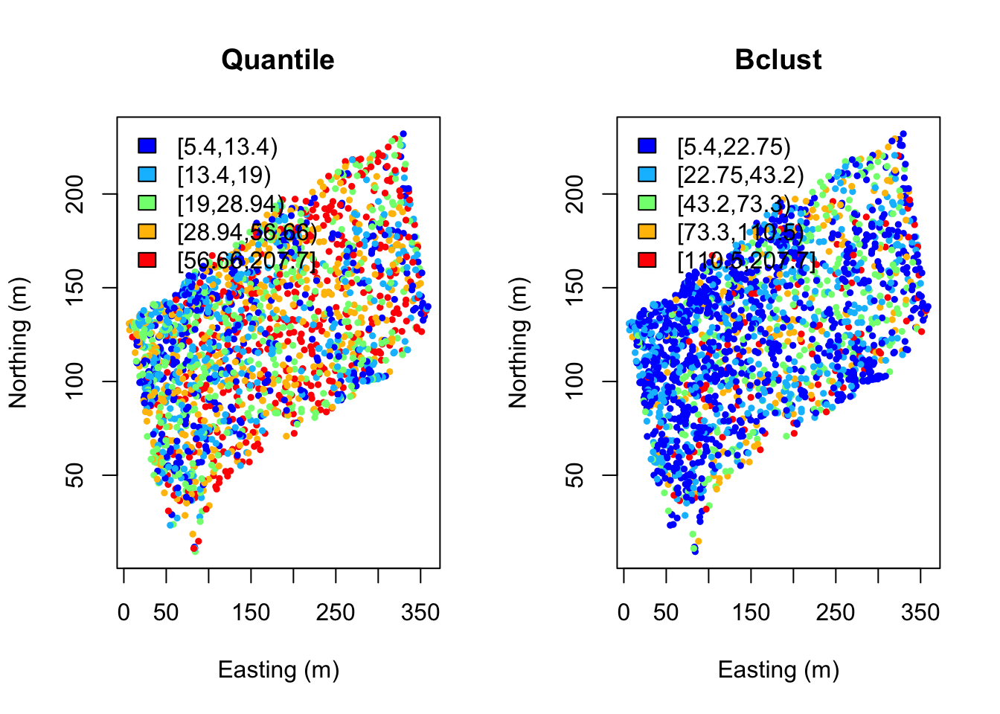
Assign diameter at breast height (DBH) classes:
fixed <- classIntervals(DBH, n=4, style="fixed", fixedBreaks=c(0,12.7,30.48,60,max(DBH)+1))
fixed.col <- findColours(fixed, col.pal)
plot(coords, col=fixed.col, pch=19, cex=0.5,
main="Forestry tree size classes", xlab="Easting (m)", ylab="Northing (m)")
legend("topleft", fill=attr(fixed.col, "palette"),
legend=c("sapling","poletimber","sawtimber","large sawtimber"), bty="n")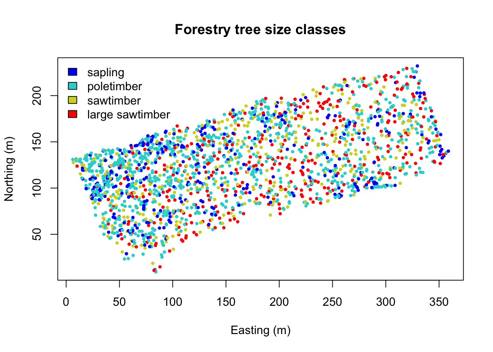
Interpolate over the points. Note that image.plot() is from the “fields” R package. See above if this command is not working.
x.res <- 100; y.res <- 100
surf <- mba.surf(cbind(coords, DBH), no.X=x.res, no.Y=y.res,
h=5, m=2, extend=FALSE)$xyz.est
image.plot(surf, xaxs = "r", yaxs = "r",
xlab="Easting (m)", ylab="Northing (m)", col=col.br(25))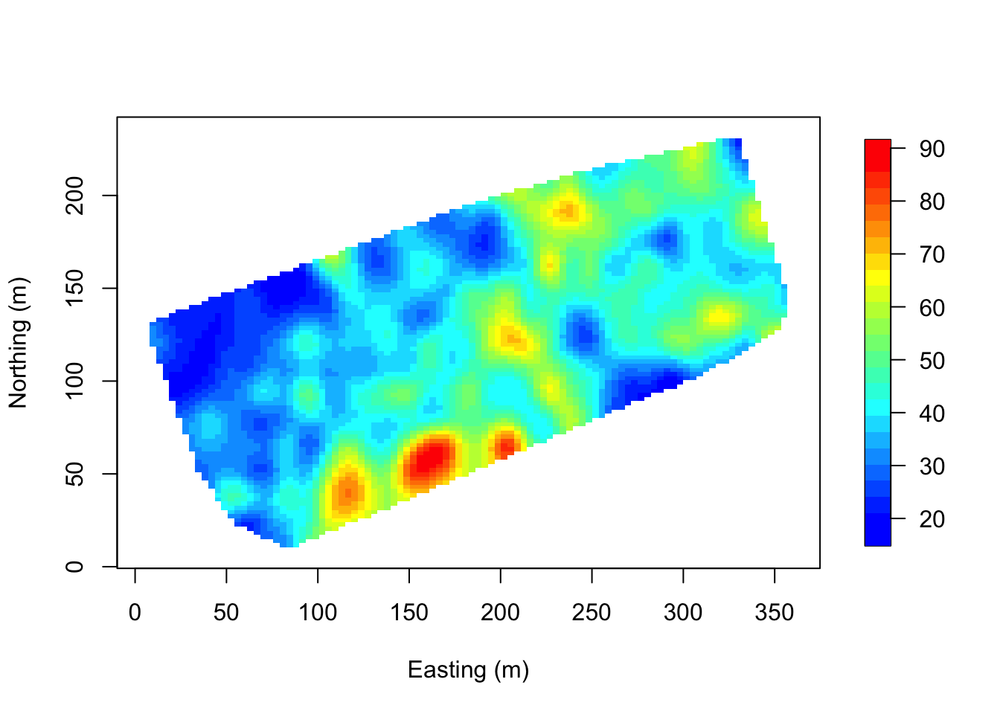
Visualize in 3D - a new window opens up. Move the 3D image around with your mouse to see different perspectives!
zlim <- range(surf[[3]], na.rm=TRUE)
zlen <- zlim[2] - zlim[1] + 1
colorlut <- col.br(zlen) # DBH color lookup table
col <- colorlut[ surf[[3]]-zlim[1]+1 ] # assign colors to heights for each point
surface3d(surf[[1]], surf[[2]], surf[[3]], col=col)
axes3d(); title3d(main="DBH", xlab="Easting (m)",
ylab="Northing (m)", zlab="DBH (cm)")Create a perspective plot of DBH:
par(mfrow=c(1,1))
drape.plot(surf[[1]], surf[[2]], surf[[3]], col=col.br(150),
theta=225, phi=50, border=FALSE,
add.legend=FALSE, xlab="Easting (m)",
ylab="Northing (m)", zlab="DBH (cm)")
image.plot(zlim=range(surf[[3]], na.rm=TRUE), legend.only=TRUE, horizontal=FALSE)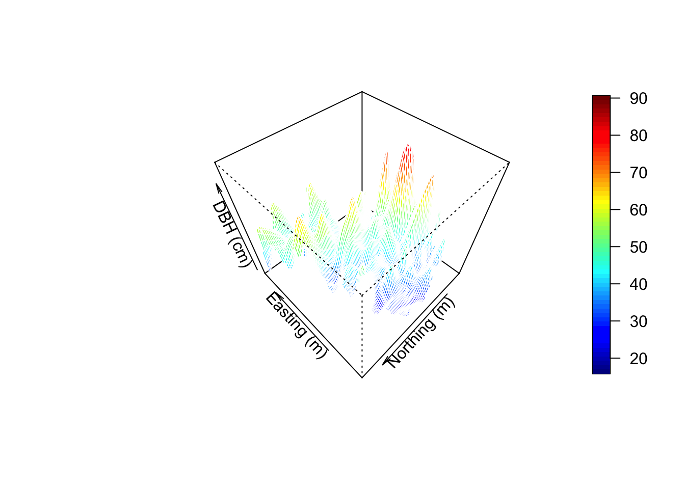
Variogram Analysis (from Exploring spatial data in R Fit an exponential variogram to these data and another to the residuals of a linear regression of DBH onto tree species.
max.dist <- 0.25*max(iDist(coords))
bins <- 50
vario.DBH <- variog(coords=coords, data=DBH,
uvec=(seq(0, max.dist, length=bins)))
# check it out
plot(vario.DBH)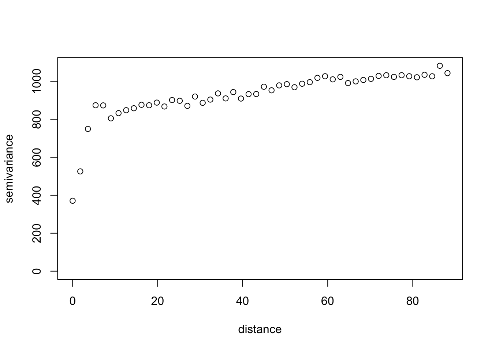
fit.DBH <-variofit(vario.DBH, ini.cov.pars=c(600, 200/-log(0.05)),
cov.model="exponential", minimisation.function="nls", weights="equal")
lm.DBH <- lm(DBH~Species, data=WEF.dat)
summary(lm.DBH)
DBH.resid <- resid(lm.DBH)
vario.DBH.resid <- variog(coords=coords, data=DBH.resid, uvec=(seq(0, max.dist, length=bins)))
fit.DBH.resid <-variofit(vario.DBH.resid, ini.cov.pars=c(300, 200/-log(0.05)),
cov.model="exponential", minimisation.function="nls", weights="equal")
par(mfrow=c(1,2))
plot(vario.DBH, ylim=c(200,1200), main="DBH")
lines(fit.DBH)
abline(h=fit.DBH$nugget, col="blue")##nugget
abline(h=fit.DBH$cov.pars[1]+fit.DBH$nugget, col="green")##sill
abline(v=-log(0.05)*fit.DBH$cov.pars[2], col="red3")##effective range
plot(vario.DBH.resid, ylim=c(200,500), main="DBH residuals")
lines(fit.DBH.resid)
abline(h=fit.DBH.resid$nugget, col="blue")
abline(h=fit.DBH.resid$cov.pars[1]+fit.DBH.resid$nugget, col="green")
abline(v=-log(0.05)*fit.DBH.resid$cov.pars[2], col="red3")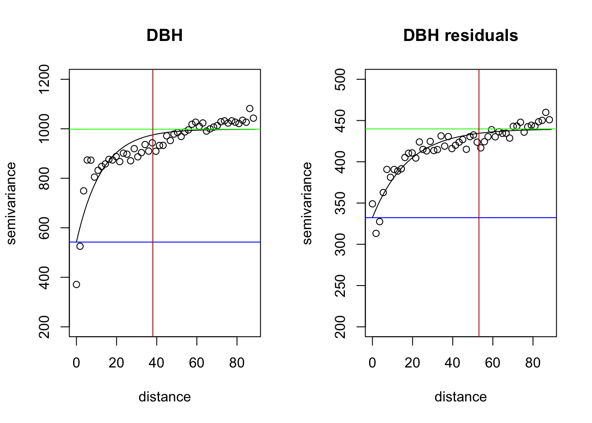
The above variograms are isotropic (spatial dependence is the same in all directions). Compute directional semivariograms to determine if there is anisotropy.
vario.DBH.resid <- variog4(coords=coords, data=DBH.resid, uvec=(seq(0, max.dist, length=bins)))
par(mfrow=c(1,1))
plot(vario.DBH.resid, omni=TRUE, main="DBH residuals", lty=1,
col=c("darkorange", "darkblue", "darkgreen","darkviolet","black"))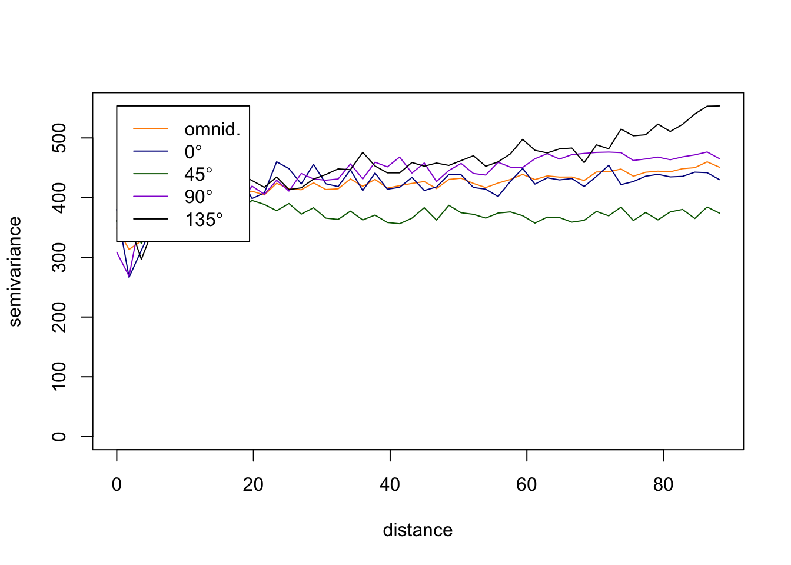
End of Exploring spatial data in R
The code below may be helpful in understanding how to answer the 4 Questions that follow.
Here is an example of how fit a variogram to other directions. Type
?variofit see how to adjust the settings. In the example
below, we look at the plot produced above to estimate:
300 which is the value for the initial sigma^2 (partial sill)
200/-log(0.05) = 66.76 which is the initial phi (range parameter = 1/phi) [ you can just enter 66 ]
OTHER DIRECTIONS: The “direction” is in units of radians. To convert degrees to radians:
Radians = degree * (pi/180). 60 degrees = pi/3, 120 degrees = 2*pi/3, 180 degrees = pi, etc.
vario.DBH.resid.x <- variog4(coords=coords, data=DBH.resid,
direction=c(0.1, pi/3, 2*pi/3, pi),
uvec=(seq(0, max.dist, length=bins)))Want to fit a variogram function for just one? In this case, shown for 60.
names(vario.DBH.resid.x)
class(vario.DBH.resid.x)
par(mfrow=c(1,1))
plot(vario.DBH.resid.x$"60", main="DBH residuals at 60°", lty=1)
lines(vario.DBH.resid.x$"60", lty=1)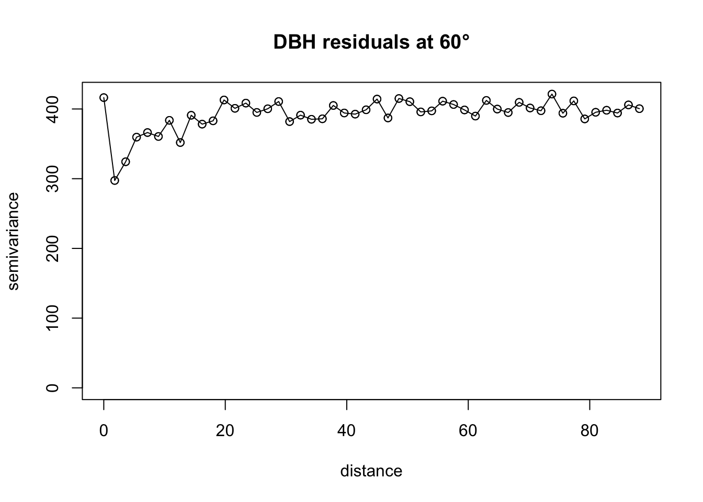
# Apply fit
fit.60 <-variofit(vario.DBH.resid.x$"60",
ini.cov.pars=c(350, 200/-log(0.05)), ##sigma^2 and 1/phi
cov.model="exponential", minimisation.function="nls",
weights="equal")
# Plot it
plot(vario.DBH.resid.x$"60", ylim=c(200,500), main="DBH residuals at 60° (exponential fit)")
lines(fit.60)
abline(h=fit.60$nugget, col="blue") ##nugget
abline(h=fit.60$cov.pars[1]+fit.60$nugget, col="green") ##sill
abline(v=-log(0.05)*fit.60$cov.pars[2], col="red") ##effective range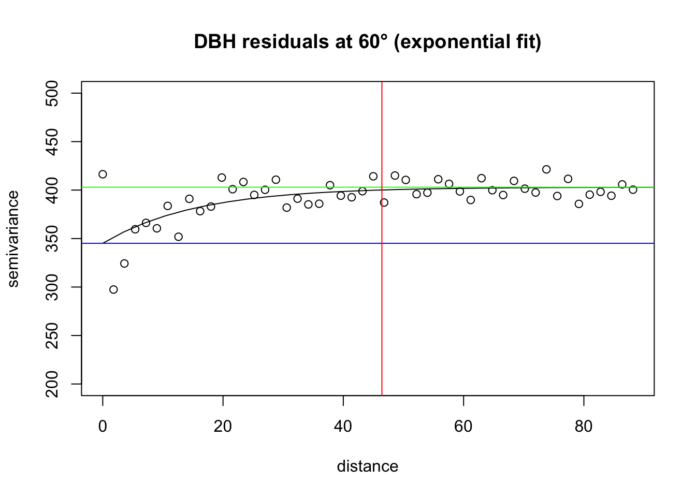
# Plot the set of directional variograms, showing the fit for 60 degrees shown
par(mfrow=c(1,1))
plot(vario.DBH.resid.x, omni=TRUE, main="DBH residuals", lty=1,
col=c("green","yellow","red","blue","orange"), legend=FALSE)
legend(x="bottomleft",legend=c("omnid","5.73°","60°","120°","180°"), pch=22,
pt.bg=c("green","yellow","red","blue","orange"))
lines(fit.60, col="red")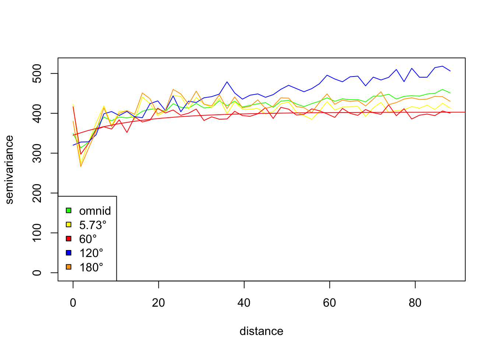
QUESTION 1:
Fit a variogram (e.g., exponential or other) to one of the Directions
in the Directional Variogram plotted in at the end of the Vignette (the
omnidirectional variogram that shows 0, 45, 90, 135). Add it to the
plot. Remember you can always look at the components of a function with
?function.
QUESTION 2:
Create a directional variogram for 4 directions OTHER than the ones used in in the omnidirectional variogram in the vignette (i.e., other than 0, 45, 90, 135). Show your code and resulting variogram. Explain why you chose these other 4 directions. Does it suggest these data are anisotropic? Why or why not?
QUESTION 3:
What do the variograms produced in this vignette tell you about these data? Specifically discuss the sill, nugget, and range.
QUESTION 4:
Why would you want to produce a variogram on the residuals? What does a variogram using residuals tell you that’s different from a variogram on the original data?
Ripley’s K
This is an OPTIONAL exercise.
The following text is modified from the spatstat
package: What is Ripley’s K? It’s the K function (or the “reduced second
moment function”) of a stationary point process X, and is defined so
that lambda K(r) equals the expected number of additional random points
within a distance r of a typical random point of X. Lambda is the
intensity of the process, i.e., the expected number of points of X per
unit area. The K function is determined by the second order moment
properties of X.
In other words, Ripley’s K summarizes spatial dependence in the form of clustering or dispersion over a specified range of distances (scales).
An estimate of K derived from a spatial point pattern dataset can be used in exploratory data analysis and formal inference about the pattern (Cressie, 1991; Diggle, 1983; Ripley, 1977, 1988). In exploratory analyses, the estimate of K can indicate inter-point “dependence” and “clustering”. For inferential purposes, the estimate of K is usually compared to the true value of K for a completely random (Poisson) point process (Null expectation), which is K(r) = pi * r^2. Deviations between the empirical and theoretical K curves may suggest spatial clustering or spatial regularity.
In the spatstat package, Kest estimates the
K function of a stationary point process, given observation of the
process inside a known, bounded window. The argument X is interpreted as
a point pattern object (of class “ppp”, see ppp.object) and
can be supplied in any of the formats recognized by
as.ppp().
The ArcGIS page on this topic is Multi-Distance Spatial Cluster Analysis (Ripley’s K Function) (Spatial Statistics)
You can visualize a measure of spatial clustering/dispersion over a range of distances as in this ArcGIS schematic:

Suppose we want to determine how Douglas Fir trees are distributed in these data - are they Clustered? Dispersed? Random? At what scale? And is the pattern significant? First pull out Douglas Fir from the dataset. Then plot it.
library(sp)
library(spatstat)
library(maptools)
dfir<-subset(WEF.dat, Species=="DF")
# Plot Douglas Fir DBH distribution
dfDBH <- dfir$DBH_cm
coords.df <- as.matrix(dfir[,c("East_m","North_m")])
plot(coords.df, pch=1, cex=sqrt(dfDBH)/10, col="darkgreen", xlab="Easting (m)",
ylab="Northing (m)")
leg.vals <- round(quantile(dfDBH),0)
legend("topleft", pch=1, legend=leg.vals, col="darkgreen",
pt.cex=sqrt(leg.vals)/10, bty="n", title="DBH (cm) of Douglas Fir")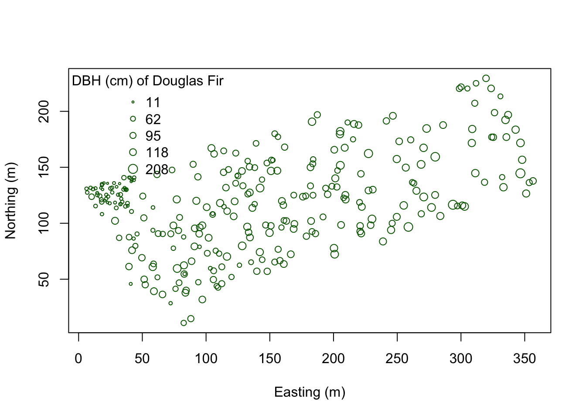
You can start to see some clustering of small DBH in the northwestern corner. Let’s quantify the distribution across the study area. Create a SpatialPointsDataFrame to generate a point pattern object from the Douglas Fir data. Then apply an edge correction. The edge correction is necessary because a hard edge (boundary) on the data extent will under-estimate the pattern since there are no neighboring points outside the data boundary. We need to specify which points will be used for the correction vs. the actual calculation. See this diagram in Multi-Distance Spatial Cluster Analysis (Ripley’s K Function) (Spatial Statistics).

We will use the best option for the correction from the
Kest function:
dfir.sp<-dfir
coordinates(dfir.sp) <- c("East_m","North_m")
# Create the point pattern object
dfir.ppp<-as(dfir.sp, "ppp")
# Apply the Kest function, selecting the "best" option for edge correction.
K.dfir <- Kest(dfir.ppp, correction="best")
plot(K.dfir, main="Ripley's K function for Douglas Fir")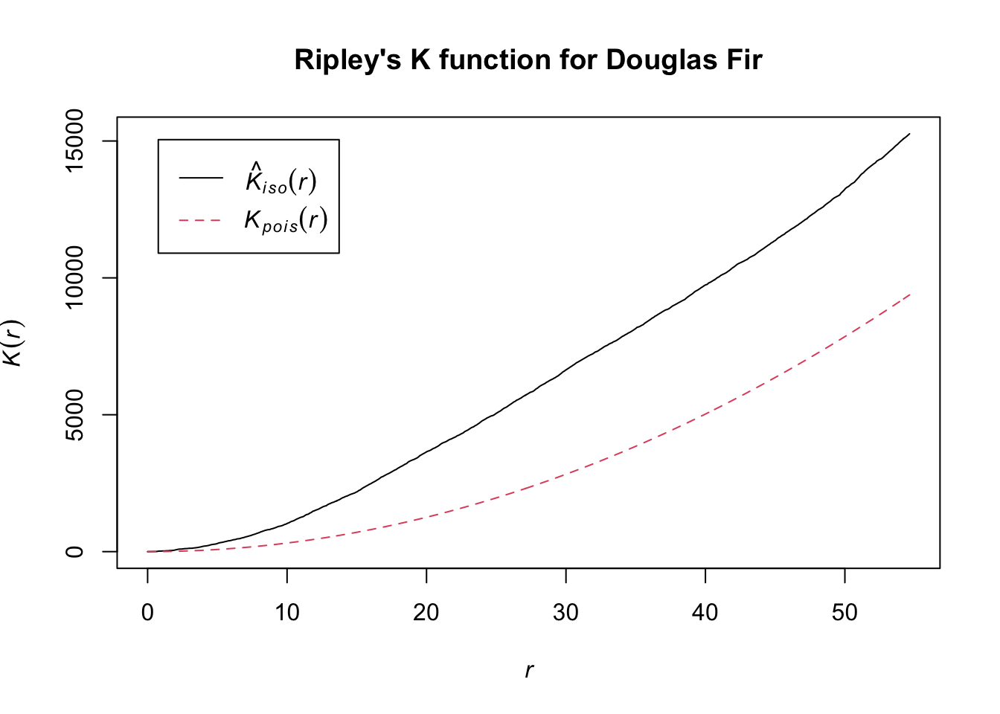
# Is the pattern significant? Apply an envelope using 500 simulations to create the 95% confidence interval around the theoretical line.
plot(envelope(dfir.ppp, Kest, correction="best", nsim = 500))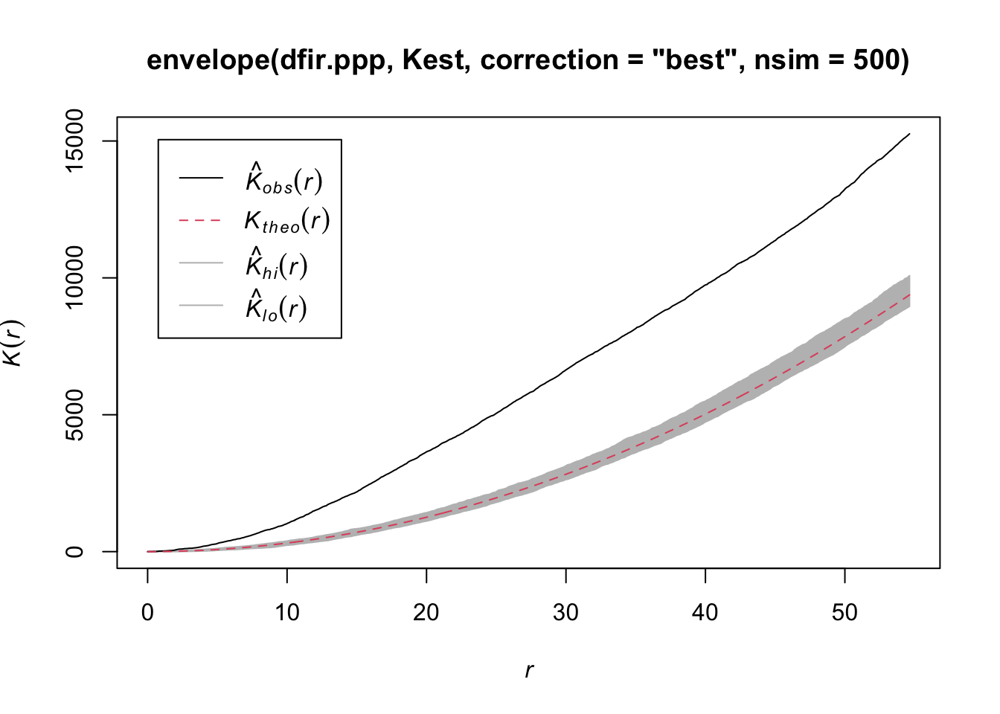
Notice how the entire plot for Douglas Fir data (black solid line) is above the theoretical curve. Values higher than the theoretical line (red dotted line) reflect clustering, and values below the theoretical line reflect dispersion. The plot indicates that even though we observed clustering in one region by plotting the occurrence data above, Douglas Fir is clustered across the entire study area, at nearly all scales. At very local scales (close to r=0) the curves overlap indicating that there is not strong clustering at those short distances. Repeat the process above to try it out on another species to see how two species compare.

This
work is licensed under a
Licensed
under CC-BY 4.0 2020; 2022 by Phoebe Zarnetske.